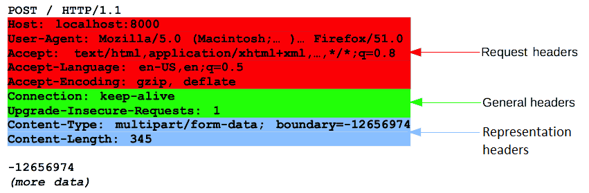

## Rest Apis </br> #### Key topics for tonight <div style="text-align: left;"> - Communication between Applications </br> - Network Layer & Http </br> - Rest Apis & Code Examples </br> </div> --- ## Communication between Applications <img style="width: 62%;" src="images/19-rest-api/rest-diagram.png" /> --- ## Communication between Applications #### The need for distributed systems - It is important for the code that we create to interact devices other than the computer the application is running on. This can be through: - Exposing data that we collect for others to view. - Exposing actions that allow for others to interact with the systems that we create. - Established distributed system patterns allow for consistent behavior between these independent applications. --- ## Communication between Applications #### Vocab <span style="font-size: 2rem;"> - <span style="color: cadetblue">Internet of Things</span> (IoT) - term to describe devices that leverage the internet, sensors, and event driven programming to communicate with other devices and applications. - <span style="color: cadetblue">Separation of Concerns</span> - the design principle stating that individual responsibilities within a system / set of systems should be grouped and contained within logical parts. </span> --- ## Distributed Systems #### A use case 1) I say "alexa, play surfin' bird at volumn 5". 2) Alexa takes the sound waves I've made and generates an intention off of them. 3) Alexa then makes a request to the <a href="https://developer.spotify.com/documentation/web-api/">spotify api</a> to see if the song exists, and if so, play it. --- ## Communication between Applications #### Scenarios for Building an API - When there is a need in your application to make expose actions or make data available to other systems. - GUIs are convenient for humans whereas APIs are convenient for other programs. - When you want your actions / data to be made available to a number of different end consumers. --- ## Communication between Applications #### Scenarios for Leveraging an API - When you're writing your own application and would like to leverage an already existing system. - When you don't want to recreate an already existing system for yourself. --- ## Communication between Applications #### Complexities - When depending on external systems, you must build your system in a way that fails gracefully when the dependent system is down. - This means handling possible exceptions, implementing retry logic, handling concurrency issues, etc - Protecting against malicious actors who might try to issue a DDoS attack on your public Apis, handling high bandwidths, etc --- ## Networking Layers & Http <span class="fragment" style="font-size: 1.75rem;"> - <span style="color: cadetblue">OSI</span> (Open Systems Interconnection model) - A conceptual model of the different layers of responsibilties between telecommunication and computing systems. </span> --- ## Networking Layers #### Sending communications through systems <span style="font-size: 2rem;"> - There are numerous responsibilities involved in communication between two network enabled devices. - As web developers, we're very fortunate that we almost never have to leave the <span style="color: cadetblue">application layer</span>, but it's important to know of the existence of the other layers. </span> --- ## Http (Hypertext Transfer Protocol) #### Definition an <span style="color: cadetblue">application layer</span> protocol designed for communication between web browsers and web servers. It is also utilized by Rest Apis! <span class="fragment" style="font-size: 1.75rem;"> - Http is a `stateless protocol`, meaning that the server does not keep any data (state) between two requests. </span> --- ## Http (Hypertext Transfer Protocol) #### Example Http Request  --- ## Http - Request types <img style="width: 62%;" src="images/19-rest-api/http-method-types.jpg" /> --- ## Http (Hypertext Transfer Protocol) #### Example Http Response <img style="width: 62%;" src="images/19-rest-api/http-example-response.png" /> --- ## Http (Hypertext Transfer Protocol) #### Checking it out in the wild <span style="color: cadetblue">Chrome network tab demo</span> --- ## Rest Apis #### High level concepts <span style="font-size: 1.85rem;"> - Rest Apis are one of the most common ways of having applications and devices communicate with one another over the internet. - Rest Apis are widely used and one of the most approachable ways for developers to define how two systems can communicate. - Rest Apis are stateless which means that each request is able to execute in isolation without a continuous session between client and server. </span> --- ## Rest Apis #### Vocab - <span style="color: cadetblue">Rest</span> (<a href="https://restfulapi.net/">Representational State Transfer</a>) - An architectural style that imposes constraints on how ditributed systems communicate through the internet. - <span style="color: cadetblue">Api</span> (Application Programming Interface) - A defined intermediary that allows two applications or systems to talk to each other. --- ## Rest Apis in .Net #### High level - There are two main approaches to building Apis in .Net in the modern tech stack - Classic controller based Apis - .Net 6 Minimal Apis (released November 2021) - Since the classic controller based Apis are more similar to what we've learned with MVC, we will mostly be looking at them today. --- ## Rest Apis in .Net - Project Demo - <a href="https://docs.microsoft.com/en-us/aspnet/core/tutorials/first-web-api?view=aspnetcore-5.0&tabs=visual-studio">Controller based API tutorial</a> - <a href="https://docs.microsoft.com/en-us/aspnet/core/tutorials/min-web-api?view=aspnetcore-6.0&tabs=visual-studio">Minimal API .Net 6 tutorial</a> --- ## Rest Apis - Concept Check! 1) What --- ## Authentication (cont) #### Considerations for sessions <span style="font-size: 2rem;"> - It's an older pattern that relies on the web server managing <span style="color: cadetblue">state</span> - When back-end applications have to worry about state, it can create scaling issues for larger applications. - Malicious actors can impersonate other users using this method if they are able to steal their cookies. - Session Ids must be stored and managed on your server. </span> --- ## Authentication (cont) #### Tokens <img style="width: 84%;" src="images/18-auth/session-vs-token.png" /> --- ## Authentication (cont) #### Considerations for Tokens <span style="font-size: 2rem;"> - Is more commonly used today and stores user state on the client (the user's web browser). - After authentication, the tokens are generated by the server and then passed off to the client. - Is the required approach when working within a <span style="color: cadetblue">stateless</span> application. </span> --- ## Sessions vs. Tokens #### Additional resources - [Fireship IO 100 seconds video](https://www.youtube.com/watch?v=UBUNrFtufWo) - [Security considerations for sessions](https://vk9-sec.com/attacking-securing-session-management/) --- ## Authorization #### Definition After we've established who you are, what are you <span style="color: cadetblue">permitted</span> to do? --- ## Authorization (cont) #### Core concepts <span style="font-size: 2rem;"> - Identify the different types of users on your site, and slice up their permissions to match those use cases. - Example: Site Admins, anonymous users, paid users, users creating data, users reading data, etc - Allows you to easily restrict parts of your site to only the group of users it is intended for. - There are a number of different ways you can slice up these groups of users (which we'll explore in some code examples here shortly). - When people talk about permissions, privileges, roles, user groups, claims, and policies, they are often referring to authorization. </span> --- ## Authorization (cont) #### Identity Demo [EShop Demo link](https://github.com/dotnet-architecture/eShopOnWeb) [Ryan's Demo Code](https://github.com/RyanTheShaw/IdentityAuthExample) [Alternative Demo link](https://docs.microsoft.com/en-us/aspnet/core/security/authorization/secure-data?view=aspnetcore-6.0) <div class="fragment"> As of 12/1/2021, it looks like the last demo link was broken when updated to .net 6, but it might be fixed in the future? </div> --- ## Authorization (cont) #### Key vocab <span style="font-size: 2rem;"> - <span style="color: cadetblue">[Authorize]</span> (attribute) - Marks a controller, or method to require that the user be authorized to access it. - <span style="color: cadetblue">[Authorize(Roles = "{enter role name here}"]</span> (attribute) - Marks a controller or method to require authorization <span style="color: cadetblue">and</span> a particularly role to be able to access it. - <span style="color: cadetblue">[AllowAnonymous]</span> (attribute) - Allows for anonymous access to a resource from within a restricted resource. </span> --- ## Authentication and Authorization - Concept Check! <span style="font-size: 2rem;"> 1) What is the difference between Authentication and Authorization? 2) How can I restrict access to a controller to only users that are signed into my site? 3) Give some examples of potential <span style="color: cadetblue">roles</span> that I might define within my application. </span> --- ## Reference Material - [Cryptography concepts video](https://www.youtube.com/watch?v=NuyzuNBFWxQ) - [Microsoft security docs](https://docs.microsoft.com/en-us/aspnet/core/security/?view=aspnetcore-6.0) --- ## Exercises [Link](https://education.launchcode.org/csharp-web-development/chapters/orm-relationships/exercises.html) --- ## Questions --- # Studio [Link](https://education.launchcode.org/csharp-web-development/chapters/auth/studio.html)